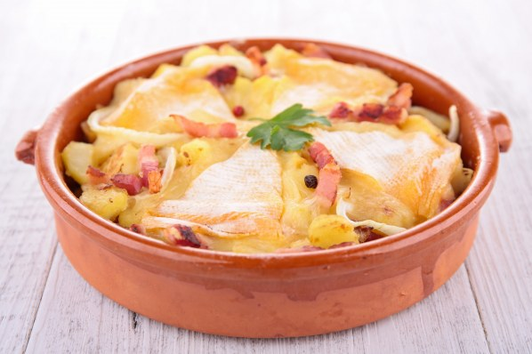

Recette de la tartiflette
Ingrédients :
- 1 kg de pomme de terre
- 200 g de lardons fumés
- 200 g d'oignon émincés
- 1 reblochon bien frait
- 2 cuillères à soupe d'huile
- 1 gousse d'ail
- Sel
- Poivre
Préparation :
- Eplucher les pommes de terre, les couper en dés, bien les rincer et les essuyer dans un torchon propre.
- Faire chauffer l'huile dans une poêle, y faire fondre les oignons.
- Lorsque les oignons sont fondus, ajouter les pommes de terre et les faire dorer de tous les côtés.
- Lorsqu'elles sont dorées, ajouter les lardons et finir de cuire.
- D'autre part, gratter la croûte du reblochon et le couper en deux (ou en quatre).
- Préchauffer le four à 200°C (thermostat 6-7) et préparer un plat à gratin en frottant le fond et les bords avec la gousse d'ail épluchée.
- Dans le plat à gratin, étaler une couche de pommes de terre aux lardons, disposer dessus la moitié du reblochon, puis de nouveau des pommes de terre. Terminer avec le reste du reblochon (croûte vers les pommes de terre).
- Enfourner pour environ 20 minutes de cuisson.

Retour à l'accueil